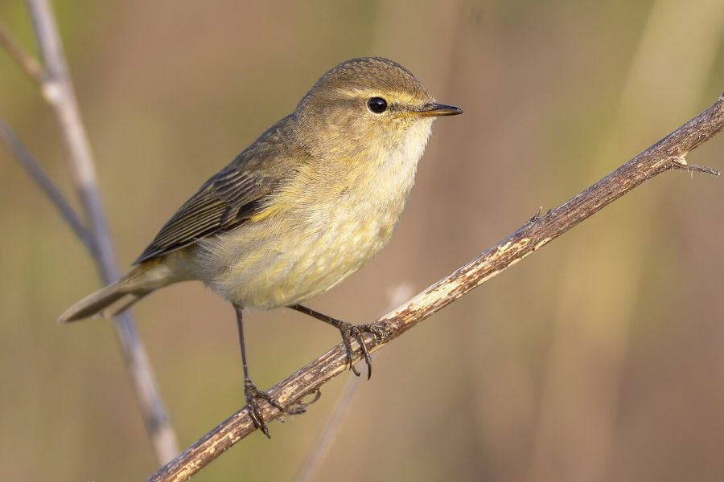

चिफ़चैफ़Common Chiffchaff
Phylloscopus collybita · Phylloscopidae · BRD-0144

- Scientific name वैज्ञानिक नाम
- Phylloscopus collybita (Vieillot, 1817)
- Family कुल
- Phylloscopidae
- Hindi हिंदी
- चिफ़चैफ़
- Local names स्थानीय नाम
- chiffchaff, common chiffchaff, chifchaf, chiff chaff
- Status here यहाँ की स्थिति
- native
- Movement आवागमन
- Winter visitor
- IUCN IUCN
- LC
- Review समीक्षा
- audited and independently read
When to look कब देखें
Winter visitor शीतकालीन प्रवासी. Expected mainly in September, October, November, December, January, February, March, April, May. मुख्यतः सितंबर, अक्टूबर, नवंबर, दिसंबर, जनवरी, फ़रवरी, मार्च, अप्रैल, मई में अपेक्षित।
Arrives in September–October from breeding grounds in Europe and central Asia; departs by April–May. Ali & Ripley (1968) and Handbook of the Birds of the Western Palearctic document the timing of arrival in northern India. All migrants and visitors →
Uses and possibilities उपयोग और संभावनाएँ
Drawn from the documented uses in the profile below, where each is labelled traditional, current or a research lead. All uses →
Tell it apart from इनसे अलग पहचानें
चिफ़चैफ़ / Common Chiffchaff
Phylloscopus collybita (Vieillot, 1817) — Phylloscopidae
चिफ़चैफ़ — यह छोटी सर्दियों की चिड़िया यूरोप से सितंबर में पूर्वी उत्तर प्रदेश आती है और अप्रैल तक रहती है। इसकी सबसे खास पहचान है इसका सरल, दोहराया हुआ गान "चिफ़-चैफ़-चिफ़-चैफ़" जो पूरे दिन सुनाई देता है। यह झाड़ों और पेड़ों में असक्रिय रहती है, तेजी से पत्तियों को पलटती है।
Quick Identification त्वरित पहचान
| Feature | Description |
|---|---|
| Size | Small warbler; 12–13 cm long |
| Upperparts | Olive-brown to greenish-brown |
| Underparts | Greyish-white to buff |
| Supercilium | Indistinct or very faint |
| Legs | Dark (distinguishing from Willow Warbler) |
| Wings and tail | Dark-edged; folded wings extend halfway down tail |
| Behaviour | Active gleaner; constantly moving through foliage |
| Song | Distinctive two-note chiff-chaff, chiff-chaff repeating |
Field tip: In open forest and woodland during winter, look for a small, greyish-brown warbler with dark legs moving actively through foliage. The song is diagnostic and heard frequently even in winter. It is constantly in motion, gleaning insects. Dark legs distinguish it from the very similar Willow Warbler.
हिंदी — कैसे पहचानें:
छोटी चिड़िया; सर्दी में झाड़ों में रहती है।
हल्का-भूरा रंग, सफेद पेट।
काली पतली टाँगें।
दोहराता हुआ गान "चिफ़-चैफ़"।
Morphology आकारिकी
Biometrics:
| Measurement | Range |
|---|---|
| Total length | 120–130 mm |
| Wing (flattened chord) | 52–59 mm |
| Tail | 44–53 mm |
| Bill | 8–9 mm |
| Tarsus | 17–21 mm |
| Weight | 7–12 g |
Size: 12–13 cm long; wingspan 16–18 cm. Weight 7–12 g. A small, compact warbler.
Plumage: Crown and back olive-brown to greenish-brown, varying by subspecies. Supercilium indistinct or absent (key difference from Willow Warbler). Cheeks and ear-coverts olive-green. Throat and underparts greyish-white to buff. Wings dark brown with paler feather edges. Tail dark brown, slightly graduated.
Legs and feet: Dark brown or black (diagnostic feature separating it from Willow Warbler, which has pale legs).
Bill: Small, pointed, dark.
Eyes: Dark, small, alert.
Sexual dimorphism: Minimal; females slightly duller.
Juveniles: Duller; yellowish-green tinge (in fresh plumage).
Vocalisations. Call repertoire:
- Song: Distinctive two-note song, chiff-chaff or zip-zap, repeated 3–6 times per phrase.; one of the most repetitive warbler songs.
- Call: Short, sharp hweet or tit, sometimes in series.
- Contact calls: Soft, subdued whistles between pair members.
हिंदी: नर का गान बहुत सरल है: "चिफ़-चैफ़" बार-बार। तीव्र "ह्वीट" कॉल। पूरे दिन गाता है।
Behaviour & Ecology व्यवहार और पारिस्थितिकी
Gleaning forager: Common Chiffchaff actively searches for insects by gleaning from foliage and branches. It feeds on:
- Small insects (flies, gnats, small wasps, aphids)
- Spiders and spider eggs
- Small caterpillars
- Occasionally small berries in late winter
Social behaviour: Territorial during winter; sings regularly to maintain territory. Generally solitary, but may join loose feeding flocks with other small warblers.
Habitat preference: Open forest, woodland, forest edge, hedgerows, gardens, cultivation margins. Prefers semi-open country with scattered trees.
Foraging technique: Actively searches vegetation, moving steadily through foliage; probes branches and leaf bases; occasionally hover-gleans.
Predators: Small raptors (Eurasian Kestrel, Merlin), Shrikes, domestic cats may take individuals.
Movement: Restless and active, constantly moving between bushes and trees.
हिंदी: जंगल के किनारे और बागों में अकेली रहती है। सर्दी में भी गाती है। पत्तियों को तेजी से खोजती है।
Life Cycle / Phenology जीवन चक्र
Winter visitor: Absent during breeding season (April–August); returns to eastern UP from September and remains through May.
Arrival and departure: First birds arrive in late August–September; numbers peak in December–February; departure begins in March–April, with most gone by late May.
Breeding (elsewhere): Breeds in Europe and Asia, from Britain east to Japan. Cup nest in low vegetation or shrubs.
Moult: Complete moult on breeding grounds before arrival; partial moult during winter.
Roosts: Roosting in low bushes, hedgerows, and tree foliage; solitary.
हिंदी: सितंबर में आता है, अप्रैल तक रहता है। यूरोप में घोंसला बनाता है। सर्दी में अकेली रहती है।
Host Plants or Prey आहार
| Food Type | Examples | Feeding Behaviour |
|---|---|---|
| Small insects | Flies, gnats, small wasps, aphids | Pick from foliage and branches |
| Spiders | Small spider species | Search vegetation thoroughly |
| Small caterpillars | Tiny lepidopteran larvae | Probe under leaves and buds |
| Small berries | Wild berries, mistletoe | Peck and swallow whole |
हिंदी: मुख्यतः छोटी कीड़े खाता है। मकड़ियाँ और अंडे भी। सर्दी के आखिर में जामुन भी खाता है।
Predators / Natural Enemies शत्रु
- Avian predators: Eurasian Kestrel, Merlin, Red-backed Shrike, larger warblers
- Mammalian predators: Domestic cat, weasel, occasionally mongoose
- Parasites: Blood parasites, internal helminths, mites
हिंदी: छोटी बाजें और बड़ी चिड़ियाँ शिकारी हैं। बिल्ली भी खतरनाक है।
Agricultural / Human Relevance कृषि प्रासंगिकता
Protected species: All wild birds in India are protected under the Wildlife (Protection) Act 1972 (Schedule IV, amended 2022). Hunting is prohibited.
Pest control: Consumes large numbers of small insects, gnats, flies, and aphids, providing beneficial pest control in gardens and orchards.
Cultural relevance: The species name "Chiffchaff" comes directly from its song, mentioned in ornithological literature since the 18th century. Known from early bird guides.
Scientific value: Population monitoring important for understanding European-Asian migratory connectivity; long-distance migration patterns critical for conservation.
हिंदी: वन्यजीव संरक्षण अधिनियम 1972 के अनुसूची IV के अंतर्गत पूरी तरह संरक्षित है। इसका शिकार निषिद्ध है।
Expected Locally स्थानीय रूप से अपेक्षित
Not a field record. Written from published accounts for eastern Uttar Pradesh. No confirmed local sighting yet — if you have seen it, that is what the atlas needs.
अभी तक स्थानीय पुष्टि नहीं। यह विवरण प्रकाशित स्रोतों से है, किसी अवलोकन से नहीं।
Winter range: Expected in eastern Uttar Pradesh from September to May, particularly in open forest patches and garden areas of Basti and Ayodhya districts. Published handbooks document this species as a regular winter visitor across northern India.
Habitat preference: Open forest, woodland, forest edge, hedgerows, gardens, cultivation margins with scattered trees.
Peak occurrence: January–February, when populations from European breeding grounds are settled.
Nearest published record: Handbook of the Birds of India and the Western Palearctic document this species as a regular winter visitor throughout the Indian plains. Its distinctive song makes it conspicuous in suitable habitat.
What a first record would be: A dated photograph or sound recording showing the bird clearly in a specific location (with GPS coordinates and date), ideally capturing the distinctive chiff-chaff song, submitted through the About page.
हिंदी: यह पक्षी स्थानीय रूप से अपेक्षित है, न कि देखे गए बतौर प्रेक्षण। सितंबर से अप्रैल तक खुली जगहों और बागों में देखे जाने चाहिए। पहला रिकॉर्ड के लिए स्पष्ट फोटोग्राफ या गान की रिकॉर्डिंग चाहिए।
Distribution वितरण
Global range: Breeding range in Europe and western and central Asia. Winters throughout Africa and the Indian subcontinent. Multiple subspecies recognized.
In India: Distributed across the Indian subcontinent as a winter visitor (September–May). Occurs from the Himalayas south to the Deccan.
In Uttar Pradesh: Widespread in winter in suitable habitat, particularly in forest edges, gardens, and cultivated areas of the plains.
In Basti district / eastern UP: Regular winter visitor in open woodland and gardens; expected on range grounds rather than confirmed in local surveys.
Research Questions शोध प्रश्न
- What are the exact breeding grounds and wintering grounds of Common Chiffchaff populations in eastern UP? Do different populations winter in different parts of the region?
- How does the diet composition vary between early winter (September–November) and late winter (February–April)?
- Do Common Chiffchaffs shift elevation or microhabitat during winter in response to temperature or food availability changes?
- क्या इस चिड़िया की सर्दियों की संख्या में पिछले दशकों से बदलाव हुआ है?
- How do males maintain territories during winter, and what role does song play in territorial maintenance? (A child can track and map singing birds over the winter season.)
- क्या बागों और खेतों के साथ लगे पेड़-झाड़ों की किस्मों में बदलाव इस चिड़िया को प्रभावित करता है?
Similar Species मिलती-जुलती प्रजातियाँ
| Species | Key Difference | Hindi | Field Rule | |
|---|---|---|---|---|
| Willow Warbler (Phylloscopus trochilus) | Pale legs (not dark); faint supercilium; different song | विलो वार्बलर | Willow Warbler has pale, pinkish legs; Common Chiffchaff has dark legs. | |
| [[humes_leaf_warbler\ | Hume's Leaf Warbler]] (Phylloscopus humei) | Darker ear-coverts; pale eyebrow stripe; smaller | ह्यूम वार्बलर | Hume's has a clearer eyebrow stripe and is greener; Chiffchaff is browner and lacks eyebrow stripe. |
| Western Crowned Warbler (Phylloscopus occipitalis) | Crown darker and more contrasting; different song | पश्चिमी मुकुट वार्बलर | Western Crowned shows a more obvious dark crown; Chiffchaff is plain-headed. |
Field rule: Common Chiffchaff is identified by dark legs and the distinctive chiff-chaff song. If the bird has pale legs, it is a Willow Warbler. If it has a clear eyebrow stripe, it is a different species.
Taxonomy & Classification वर्गीकरण
Original description. The species was described by Louis Pierre Vieillot in 1817 as Motacilla collybita, based on European specimens.
Subspecies. The nominate subspecies P. c. collybita winters in the Indian subcontinent, though other subspecies from further east may also occur rarely.
Family and order placement. Order Passeriformes; family Phylloscopidae (leaf warblers). The genus Phylloscopus contains numerous leaf warbler species, many very similar.
Phylogenetic notes. Molecular work has placed Phylloscopus warblers in their own family Phylloscopidae, distinct from other Old World warblers.
IUCN status rationale. Assessed as Least Concern (LC) globally. Populations are stable and widely distributed across a very large range. The species is adaptable to human-modified habitats. In India, it is protected under the Wildlife (Protection) Act 1972 (Schedule IV).
हिंदी: यह यूरोप और एशिया में पाया जाता है। भारत में सर्दियों में आता है। पूरी तरह सुरक्षित है।
Photo Gallery फोटो गैलरी
No photos yet — add field photos to media/species/common_chiffchaff/ and run node scripts/sync_photos.js.
Wanted photos:
- Bird gleaning foliage in typical woodland habitat
- Singing from exposed perch (showing dark legs)
- Head close-up to show lack of eyebrow stripe
- In dense hedgerow
- Winter plumage
References संदर्भ
- Vieillot, L. P. (1817). Nouveau dictionnaire d'histoire naturelle. Vol. 2, p. 239.
- Ali, S. & Ripley, S. D. (1968). Handbook of the Birds of India and Pakistan. Vol. 3 (Warblers to Redstarts). Oxford University Press, Delhi. Pp. 190–192.
- Cramp, S. & Perrins, C. M. (1992). Handbook of the Birds of Europe, the Middle East and North Africa: The Birds of the Western Palearctic. Vol. 6 (Warblers). Oxford University Press. Pp. 361–385.
- Grimmett, R., Inskipp, C. & Inskipp, T. (2011). Birds of the Indian Subcontinent (2nd edn). Oxford University Press, Delhi. P. 355.
- GBIF Occurrence Data — Phylloscopus collybita, India.
- IUCN Red List (2023). Phylloscopus collybita — BirdLife International assessment. IUCN, Cambridge. Status: Least Concern.
Source file: species/fauna/birds/common_chiffchaff.md